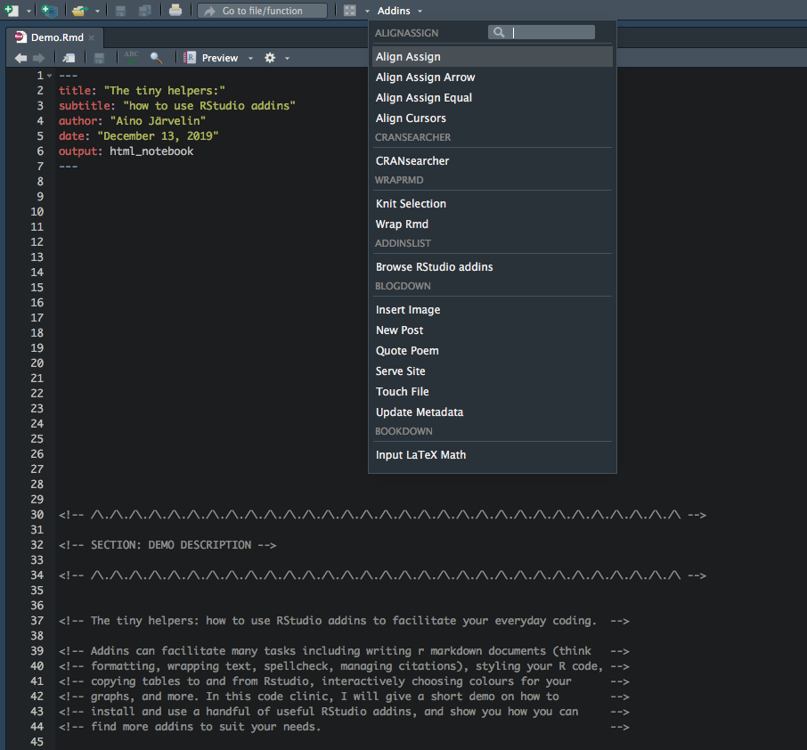

A mechanism for executing R functions interactively from within the RStudio IDE
# Install add-in "remedy" from CRAN:
install.packages("remedy")
# Install add-in "WrapRmd" from GitHub:
devtools::install_github("tjmahr/WrapRmd")
install.packages("remedy")devtools::install_github("tjmahr/WrapRmd")devtools::install_github("benmarwick/wordcountaddin")devtools::install_github("nevrome/wellspell.addin")install.packages("citr")devtools::install_github("seasmith/AlignAssign")install.packages("styler")install.packages("datapasta")devtools::install_github("BAAQMD/copydat")install.packages("colourpicker")install.packages('addinslist')install.packages("CRANsearcher")